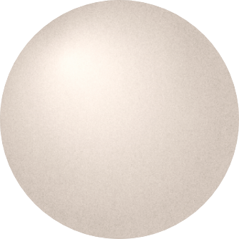
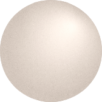
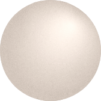
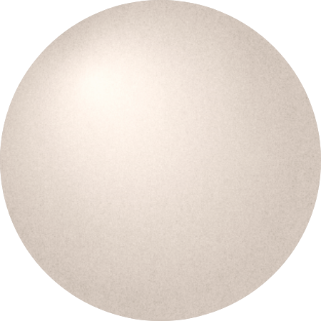
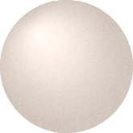
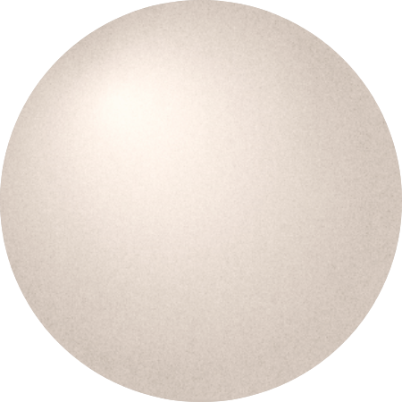
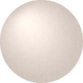

about
story

 

 



BI
‘cirround‘ : Circle + Round + Ground + Surround + Around
‘CirRound‘ 는 ’ circle(원형), ground(토양), Surround(둘러싸다), around(주의에)의 의미를
함축한 합성어로 필연적으로
사물에 밀접하게 둘러싸여, 시간과 공간을 축적해 영위하는 생활의
근간을 제공하는 장소가 되길 바라는 의미를 내포하고 있다.
symbol

logo
color & font
시간이 지나도 아름다운 고전적인 미를 자아낼 수 있는 토양과 같은 브라운 계열의 무채색을
점진적으로 채도를 조정하고 배치하여, 오랜 세월의 축적을 내포하자고 하였다.
원형의 형태의 잘 드러 낼 수 있는 폰트를 사용하였다.
또한 원형이 두드러지게 폰트가 지니고
있는 직선 및 곡선의 라인이 간결하고 비교적 얇은 폰트를 선정하였다.
'cirround’은 일상의 시공간을 풍부하게 표현할 수 있는 제품 및 콘텐츠를 제안합니다.
우리는 지속 가능하며 시간의 흐름에 따라 자연스러운 변화를 받아들이고 새로운 가치를 발견해 나갈 수 있는 제품과 공간을 제시하고자 합니다.
사물과 함께 일상의 시공간을 지내면서 사용자만의 활동이 스며든, 변화의 축적을 표현할 수 있는 제품이 되길 바랍니다.